측량및지형공간정보산업기사 (2017-09-23 기출문제)
1과목: 응용측량
1. 댐 외부의 수평변위에 대한 측정방법으로 가장 부적합한 것은?
- 삼각측량
- GNSS측량
- 삼변측량
- 시거측량
(정답률: 61%)

2. 노선측량의 주요 대상이 아닌 것은?
- 해안선
- 운하
- 도로
- 철도
(정답률: 71%)
3. 하천측량에서 평면측량의 일반적인 범위는?
- 유체부에서 제외지 및 제내지 300m 이내, 무제부에서는 홍수영향 구역보다 약간 넓게
- 유체부에서 제외지 및 제내지 200m 이내, 무제부에서는 홍수영향 구역보다 약간 좁게
- 유체부에서 제내지 및 제외지 200m 이내, 무제부에서는 홍수영향 구역보다 약간 넓게
- 유체부에서 제내지 및 제외지 300m 이내, 무제부에서는 홍수영향 구역보다 약간 좁게
(정답률: 76%)
4. 댐의 저수용량 계산에 주로 사용되는 체적계산 방법은?
- 점고법
- 등고선법
- 단면법
- 절선법
(정답률: 63%)
5. 수로측량에서 수심, 안벽측심, 해안선 등 원도 작성에 필요한 일체의 자료를 일정한 도식에 따라 작성한 도면을 무엇이라고 하는가?
- 해양측도
- 측량원도
- 측심도
- 해류도
(정답률: 58%)
6. 수로측량의 수심을 결정하기 위한 기준면으로 사용되는 것은?
- 대조의 평균고조면
- 약최고고조면
- 평균저조면
- 기본수준면
(정답률: 58%)
7. 원곡선 설치에 있어서 접선장(T.L)을 구하는 공식은? (단, R은 곡선 반지름, I는 교각)
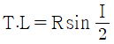
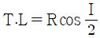
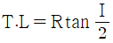
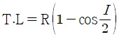
(정답률: 77%)
8. 클로소이드 곡선에 대한 설명으로 옳은 것은?
- 클로소이드의 모양은 하나 밖에 없지만 매개변수 A를 바꾸면 크기가 다른 무수한 클로소이드를 만들 수 있다.
- 클로소이드는 길이를 연장한 모양이 목걸이 모양으로 연주곡선이라고도 한다.
- 매개변수 A=100m인 클로소이드를 축척 1:1000 도면에 그리기 위해서는 A=100cm인 클로소이드를 그려 넣으면 된다.
- 클로소이드는 요소에는 길이의 단위를 가진 것과 면적의 단위를 가진 것으로 나눠진다.
(정답률: 64%)
9. 자동차가 곡선구간을 주행할 때에는 뒷바퀴가 앞바퀴보다 곡선의 내측에 치우쳐서 통과하므로 차선폭을 증가시켜 주는 확폭의 크기는(slack)는? (단, R : 차량중심의 회전반지름, L : 전후차륜거리)
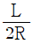
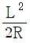
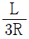
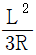
(정답률: 77%)
10. 직사각형 형태의 토지를 30m의 테이프로 측정하였더니 가로 42m, 세로 32m를 얻었다. 이 때 테이프가 30m에 대하여 1.5cm 늘어나 있었다면 면적의 오차는?
- 0.900m2
- 1.109m2
- 1.344m2
- 1.394m2
(정답률: 64%)
11. 하천측량에서 횡단면도의 작성에 필요한 측량으로 하천의 수면으로부터 하저까지의 깊이를 구하는 측량은?
- 유속측량
- 유량측량
- 양수표 수위관측
- 심천측량
(정답률: 80%)
12. 교각이 60°인 단곡선 설치에서 외할(E)이 20m일 때 곡선반지름(R)은?
- 112.28m
- 129.28m
- 132.56m
- 168.35m
(정답률: 67%)
13. 수심이 h인 하천에서 수면으로부터 0.2h, 0.6h, 0.8h 깊이의 유속이 각각 0.76m/s, 0.64m/s, 0.45m/s일 때 2점법으로 계산한 평균유속은?
- 0.545m/s
- 0.6⑤m/s
- 0.700m/s
- 0.830m/s
(정답률: 73%)
14. 그림과 같이 단곡선에서 다음과 같은 측량 결과를 얻었다. 곡선반지름(R)=50m, α=41°40‘00“, ∠ADB=∠DAO=90°일 때 AD의 거리는?
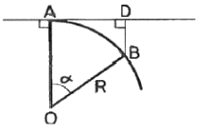
- 33.24m
- 35.43m
- 37.35m
- 44.50m
(정답률: 38%)
15. 축척 1:500인 도면상에서 감각형 세변 a, b, c의 길이가 a=5cm, b=6cm, c=7cm 이었다면 실제면적은?
- 173.2m2
- 24.03m2
- 367.4m2
- 402.8m2
(정답률: 72%)
16. 그림과 같이 2변의 길이가 각각 45.4m, 38.6m이고, ∠ABC가 118°30‘인 삼각형의 면적은?
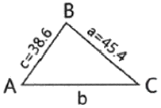
- 245.35m2
- 248.13m2
- 770.04m2
- 780.94m2
(정답률: 64%)
17. 표고가 425.880m인 BM으로부터 터널 내 P점의 표고를 측정한 결과가 그림과 같다면 P점의 표고는?
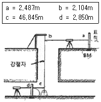
- 376.568m
- 380.776m
- 383.989m
- 386.476m
(정답률: 48%)
18. 터널 내에서 차량 등에 의하여 파괴되지 않도록 견고하게 만든 기준점을 무엇이라 하는가?
- 시표(target)
- 자이로(gyro)
- 갱도(坑道)
- 다보(dowel)
(정답률: 74%)
19. 어느 지역의 토공량을 구하기 위해 사각형 격자의 교점에 대하여 수준측량을 하여 얻은 절토고(단위:m)가 그림과 같을 때 절토공량은? (단, 모든 격자의 크기는 가로 5m, 세로 4m이다.)
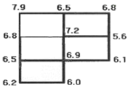
- 298.5m3
- 333.3m3
- 666.5m3
- 675.5m3
(정답률: 66%)
20. 면적측량에 대한 설명으로 틀린 것은?
- 삼사법에서는 삼각형의 밑변과 높이를 되도록 같게 하는 것이 이상적이다.
- 삼변법은 정삼각형에 가깝게 나누는 것이 이상적이다.
- 구적기는 불규칙한 형의 면적측정에 널리 이용된다.
- 심프슨 제2법칙은 사다리꼴 2개를 1조로 생각하여 면적을 계산한다.
(정답률: 65%)
2과목: 사진측량 및 원격탐사
21. 다음 중 항공삼각측량 결과로 얻을 수 없는 정보는?
- 건물의 높이
- 지형의 경사도
- 댐에 저장된 물의 양
- 어떤 지점의 3차원 위치
(정답률: 74%)
22. 표정작업에서 발생한 불완전입체도형에 대한 설명으로 옳지 않은 것은?
- 원인은 구름, 수면 등일 경우가 많다.
- 표정점의 기준은 일반적으로 6점이다.
- 표정점의 배치와 관련이 있다.
- 일반적으로 절대표정에 관련된다.
(정답률: 50%)
23. 사진의 외부표정요소는?
- 사진의 초점거리와 필름의 크기
- 사진촬영 간격과 항공기의 속도
- 사진의 촬영위치와 촬영방향
- 사진의 축척과 종북도
(정답률: 50%)
24. 편위수정에 대한 설명으로 옳지 않은 것은?
- 사진지도 제작과 밀접한 관계가 있다.
- 경사사진을 엄밀 수직사진으로 고치는 작업이다.
- 지형의 기복에 의한 변위가 완전히 제거된다.
- 4점의 평면좌표를 이용하여 편위수정을 할 수 있다.
(정답률: 66%)
25. 위성영상의 처리단계는 전처리와 후처리로 분류된다. 다음 중 전처리에 해당되는 것은?
- 영상분류
- 기하보정
- 3차원 시각화
- 수치표고모델 생성
(정답률: 65%)
26. 비행ㄱ도가 동일할 때 보통각, 광각, 초광각의 세 가지 카메라로 촬영할 경우 사진축척이 가장 작게 결정되는 것은?
- 초광각사진
- 광각사진
- 보통각사진
- 모두 동일
(정답률: 70%)
27. 수치영상자료가 80bit로 표현된다고 할 때, 영상 픽셀값의 수치표현 범위로 옳은 것은?
- 0~63
- 1~64
- 0~255
- 1~256
(정답률: 68%)
28. 적외선 영상, 레이더 영상, 천연색 영상 등을 이용하여 대상체와 직접적인 물체적 접촉없이 정보를 획득하는 측량 방법은?
- GPS 측량
- 전자평판측량
- 원격탐사
- 수준측량
(정답률: 71%)
29. 사진크기가 24cm×18cm인 항공사진의 축척이 1:20,000일 때 사진상에 촬영되는 면적은?
- 16.84km2
- 17.28km2
- 18.32km2
- 19.25km2
(정답률: 54%)
30. 넓이가 20km×40km인 지역에서 항공사진을 촬영한 결과, 유효면적이 15.09km2라 하면 이 지역에 필요한 사진 매수는? (단, 안전율은 30%이다.)
- 55매
- 61매
- 65매
- 69매
(정답률: 54%)
31. 영상좌표를 사진좌표로 바꾸는 과정을 무엇이라고 하는가?
- 영상정합
- 내부표정
- 상호표정
- 기복변위 보정
(정답률: 47%)
32. 다음의 조건을 가진 사진들 중에서 입체시가 가능한 것은?
- 50% 이상 중복 촬영된 사진 2매
- 광각 사진기에 의하여 촬영된 사진 1매
- 한 지점에서 반복 촬영된 사진 2매
- 대상 지역 파노라마 사진 1매
(정답률: 51%)
33. 사진측량의 특징에 대한 설명으로 옳지 않은 것은?
- 지상측량에 비해 외업 시간이 짧다.
- 사진측량의 영상은 중심투영상이다.
- 개인적인 원인에 의한 관측오차가 적게 발생한다.
- 측량의 축척이 소축척보다는 대축척일 때 경제적이다.
(정답률: 65%)
34. 다음은 어느 지역의 영상과 동일한 지역의 지도이다. 이 자료를 이용하여 “논”의 훈련지역(training field)을 선택한 결과로 적당한 것은?
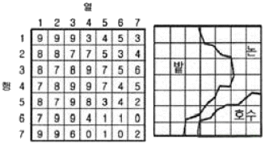
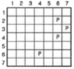
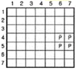
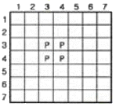
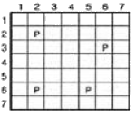
(정답률: 69%)
35. 일반적으로 디지털 원격탐사 자료에 사용되는 컬러 좌표시스템은?
- 청색(B) - 백색(W) - 황색(Y)
- 백색(W) - 황색(Y) - 적색(R)
- 적색(R) - 녹색(G) - 청색(B)
- 녹색(G) - 청색(B) - 백색(W)
(정답률: 74%)
36. 표고 200m의 평탄한 토지를 축척 1:10,000으로 촬영한 항공사진의 촬영 기선길이는? (단, 사진크기 23cm×23cm, 종중복도 65%)
- 1,400m
- 1,150m
- 920m
- 8⑤m
(정답률: 53%)
37. 상호표정(relative orientation)에 대한 설명으로 옳지 않은 것은?
- 상호표정은 X방향의 횡시차를 소거하는 작업이다.
- 상호표정은 Y방향의 종시차를 소거하는 작업이다.
- 상호표정은 보통 내부표정 후에 이루어지는 작업이다.
- 상호표정을 하기 위해서는 5개의 표정인자를 사용한다.
(정답률: 46%)
38. 야간이나 구름이 많이 낀 기상조건에서 취득이 가장 용이한 영상은?
- 항공 영상
- 레이더 영상
- 다중파장 영상
- 고해상도 위성 영상
(정답률: 74%)
39. 사진의 크기가 20cm×20cm인 수진항공사진에서 주점기선 길이가 90mm이었다면 이 사진의 종중복도는?
- 45%
- 55%
- 60%
- 65%
(정답률: 53%)
40. 항공사진에 나타나는 사진지표를 서로 마주보는 것끼리 연결한 직선의 교점은?
- 주점
- 연직점
- 등각점
- 중력점
(정답률: 46%)
3과목: GIS 및 GPS
41. 다음 중 등치선도 형태의 주제도에 가장 적합한 정보는?
- 기압
- 행정구역
- 토지이용
- 주요 관광지
(정답률: 53%)
42. 객체관계형 공간 데이터베이스에서 질의를 위해 주로 사용하는 언어는?
- DML
- GML
- OQL
- SQL
(정답률: 74%)
43. 지리정보시스템(GIS) 분석 방법 중 차량 경로 탐색이나 최단 거리 탐색, 최적 경로 분석, 자원 할당 분석 등에 주로 사용되는 것은?
- 면사상 중첩 분석
- 버퍼 분석
- 선사상 중첩 분석
- 네트워크 분석
(정답률: 73%)
44. 지리정보시스템(GIS)의 이용목적에 따른 용어 설명이 옳지 않은 것은?
- UIS-환경정보체계
- LIS-토지정보체계
- FM-시설물 관리시스템
- AM-도면자동화시스템
(정답률: 65%)
45. 지리정보시스템의 자료입력과정에서 종이 지도를 래스터 데이터의 형태로 입력할 수 있는 장비는?
- 스캐너
- 키보드
- 마우스
- 디지타이저
(정답률: 61%)
46. DOP에 대한 설명으로 틀린 것은?
- DOP은 위성이 기하학적인 배치에 따라 결정된다.
- DOP값이 클수록 위치가 정확하게 결정된다.
- DOP는 3차원 위치에 대한 추정 정밀도와 관계된다.
- 상대측위에서는 상대적 위치의 정밀도를 나타내는 RDOP을 사용한다.
(정답률: 63%)
47. 사용자가 직접 응용프로그램과 서비스를 개발할 수 있도록 공개된 라이브러리로 지도서비스와 같이 누구나 접근하여 사용할 수 있는 인터페이스를 의미하는 것은?
- Mash-up
- Ontolohy
- Open API
- Web 1.0
(정답률: 73%)
48. GPS에서 사용하고 있는 신호가 아닌 것은?
- C/A
- L1
- L2
- E5
(정답률: 62%)
49. 수록된 데이터의 내용, 품질, 작성자, 작성일자 등과 같은 유용한 정보를 제공하여 데이터 사용을 편리하게 하기 위한 것은?
- 위상데이터
- 공간데이터
- 메타데이터
- 속성
(정답률: 74%)
50. 지리정보시스템(GIS) 자료 종류 중 가계수입의 ‘저소득’, ‘중간소득’, ‘고소득’과 같이 어떤 자연적인 순서는 표현할 수 있지만 계산이 불가능한 자료값을 의미하는 것은?
- 명목 자료값(Nominal data value)
- 순서 자료값(Ordinal data value)
- 간격 자료값(Interval data value)
- 비율 자료값(Ratio data value)
(정답률: 66%)
51. 지리정보시스템(GIS) 자료의 품질향상을 위하 방안과 가장 거리가 먼 것은?
- 철저한 인력 관리
- 철저한 비용 절감
- 논리적 일관성 확보
- 위치 및 속성 정확도의 관리
(정답률: 71%)
52. GNSS(Global Navigational Satellite System)과 같은 위성측위시스템과 거리가 먼 것은?
- GPS
- GLONASS
- IKONOS
- GALILEO
(정답률: 60%)
53. GPS에 이용되는 좌표계는?
- WGS72
- IUGG74
- GRS80
- WGS84
(정답률: 73%)
54. 특용작물 재배 적합지를 물색하기 위해 그림과 같이 주제도를 만들었다. 해발 500m이상이며 사질토인 밭에 작물이 잘 자란다고 한다면 적합지로 옳은 것은?
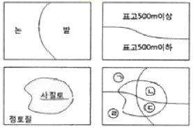
- ㉠
- ㉡
- ㉢
- ㉣
(정답률: 74%)
55. 벡터데이터의 특성에 대한 설명으로 옳지 않은 것은?
- 자료 구조가 래스터보다 복잡하다.
- 레이어의 중첩분석이 래스터보다 용이하다.
- 위상 관계를 이용한 공간분석이 가능하다.
- 객체의 형상이 점, 선, 면으로 표현한다.
(정답률: 52%)
56. 지리정보분야에 대한 표준화를 위해 지리적 위치와 직ㆍ간접으로 관련이 되는 사물이나 현상에 대한 정보표준규격을 수립하는 국제표준화기구는?
- KSO/TC211
- IT389
- LBS
- ISO/TC211
(정답률: 74%)
57. 아래와 같은 100M 해상도의 DEM에서 최대 경사방향에 해당하는 경사도는?
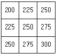
- 20%
- 25%
- 30%
- 35%
(정답률: 40%)
58. 래스터(Raster)데이터의 구성요소로 옳은 것은?
- Line
- Point
- Pixel
- Polygon
(정답률: 74%)
59. 아래의 래스터 데이터에 중앙값 윈도우(Median kernel)를 3×3 크기로 적요한 결과로 옳은 것은?
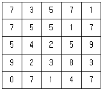
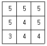
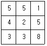
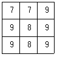
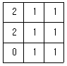
(정답률: 61%)
60. TIN(Triangulated lrregular Network)의 특징이 아닌 것은?
- 연속적인 표면을 표현하는 방법으로 부정형의 삼각형으로 이루어진 모자이크 식으로 표현한다.
- 벡터데이터 모델로 추출된 표본 지점들이 x, y, z값을 가지고 있다.
- 표본점으로부터 삼각형의 네트워크를 생성하는 방법은 대표적으로 델로니(Delaunay) 삼각법이 사용된다.
- TIN 자료모델에는 각 점과 인접한 삼각형들 간에 위상관계(topolohy)가 형성되지 않는다.
(정답률: 60%)
4과목: 측량학
61. 수평각관측법에 대한 설명 중 틀린 것은?
- 단각법은 1개의 각을 1회 관측하는 방법이다.
- 배각법은 1개의 각을 2회 이상 반복 관측하여 평균하는 방법이다.
- 방향각법은 한 점 주위에 있는 각을 연속해서 관측할 때 사용하는 방법이다.
- 조합각관측법은 수평각 관측법 중 정확도가 가장 낮은 관측방법이다.
(정답률: 60%)
62. 기포 한 눈금의 길이가 2mm, 감도가 20“일 때 기포관의 곡률반지름은?
- 20.63m
- 23.26m
- 32.12m
- 38.42m
(정답률: 43%)
63. 다각측량의 폐합오차 조정방법 중에서 컴파스법칙(compass rule)을 주로 사용하는 경우는?
- 각 관측과 거리관측의 정밀도가 동일할 때
- 각 관측과 거리관측에 큰 오차를 포함하고 있을 때
- 각 관측의 정밀도가 거리관측의 정밀도보다 높을 때
- 각 관측의 정밀도가 거리관측의 정밀도보다 낮을 때
(정답률: 45%)
64. 지구의 장반경을 a, 단반경을 b라고 할 때 편평률을 나타내는 식은?
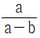
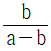
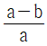
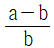
.
(정답률: 71%)
65. 그림의 측점 C에서 점Q 및 점P 방향에 장애물이 있어서 시준이 불가능하여 편심거리 e만큼 떨어진 B점에서 각 T를 관측했다. 측점C에서의 측각 T'은?
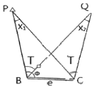
- T'=T+x1-x2
- T'=T-x1-x2
- T'=T-x1
- T'=T+x1
(정답률: 61%)
66. 다음 중 삼각망의 정확도가 가장 높은 것은?
- 단일 삼각망
- 유심 삼각망
- 단열 삼각망
- 사변형 삼각망
(정답률: 63%)
67. 어느 측선을 20m 줄자로 4회에 나누어 80m를 관측하였다. 1회 관측에 5mm의 누적오차와 ±5mm의 우연오차가 있었다면 정확한 거리는?
- 80.02±0.02m
- 80.02±0.01m
- 80.01±0.02m
- 80.01±0.01m
(정답률: 56%)
68. 교호수준측량에 관한 설명으로 옳지 않은 것은?
- 교호수준측량은 하천, 계곡 등이 있어 중간지점에 레벨을 세울 수 없을 경우 실시한다.
- 교호수준측량에 사용되는 기계는 레벨과 수준척(표척)이다.
- 교호수준측량은 가압차를 이용한 간접수준측량 관측방법에 속한다.
- 교호수준측량은 표척의 시준거리를 같게 설치한다.
(정답률: 52%)
69. 다각측량 결과가 그림과 같고 측점 B의 좌표가 (100, 100), BC의 길이가 100m일 때, C점의 좌표(x, y)는? (단, 좌표의 단위는 m이다.)
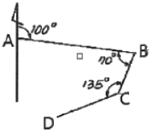
- (13.4, 50)
- (50, 12.5)
- (70, 13.4)
- (50, 70)
(정답률: 46%)
70. 지구를 구체로 보고 지표면상을 따라 40km를 측정했을 때 평면상의 오차 보정량은? (단, 지구평균 곡률 반지름은 6370km이다.)
- 6.57cm
- 13.14cm
- 23.10cm
- 33.10cm
(정답률: 47%)
71. 수준측량의 오차 중에서 성질이 다른 오차는?
- 표척의 0점 오차
- 시차에 의한 오차
- 표척눈금이 표준길이와 달라 생기는 오차
- 시준선과 기포관축이 평행하지 않아 생기는 오차
(정답률: 59%)
72. 등고선의 성질에 대한 설명으로 옳지 않은 것은?
- 등고선은 분수선(능선)과 직각으로 만났다.
- 높이가 다른 등고선은 절벽이나 동굴의 지형을 제외하고는 교차하거나 만나지 않는다.
- 등고선은 지표의 최대경사선의 방향과 직교한다.
- 급경사는 완경사에 비해 등고선 간격이 넓다.
(정답률: 71%)
73. 축척 1:10000 지형도에서 경사가 5%인 등경사선의 인접 주곡선 간 수평거리는?
- 40m
- 50m
- 100m
- 200m
(정답률: 48%)
74. 그림과 같이 a1, a2, a3를 같은 경중률로 관측한 결과 a1-a2-a3=24"일 때 조정량으로 옳은 것은?
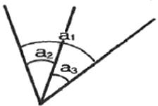
- a1=+8", a2=+8", a3=+8"
- a1=-8", a2=+8", a3=+8"
- a1=-8", a2=-8", a3=-8"
- a1=+8", a2=-8", a3=-8"
(정답률: 61%)
75. 측량기준점의 구분에 있어서 국가기준점에 해당하지 않는 것은?
- 위성기준점
- 수준점
- 중력점
- 지적도근점
(정답률: 74%)
76. 2년 이하의 징역 또는 2천만원 이하의 벌금에 해당하는 경우는?
- 성능검사를 부정하게 한 성능검사대행자
- 무단으로 측량성과 또는 측량기록을 복제한 자
- 심사를 받지 아니하고 지도 등을 간행하여 판매하거나 배포한 자
- 측량기술자가 아님에도 불구하고 측량을 한자
(정답률: 58%)
77. 기본측량의 실시공고에 포함되어야 할 사항이 아닌 것은?
- 측량의 종류
- 측량의 목적
- 측량의 실시지역
- 측량의 성과 보관 장소
(정답률: 73%)
78. 공공측량성과 심사시 측량성과 심사수탁기관이 심사결과의 통지기간을 10일의 범위에서 연장할 수 있는 경우로 옳지 않은 것은?
- 지상현환측량, 수치지도 및 수치표고자료 등의 성과심사량이 면적 10제곱킬로미터 이상일 때
- 성과심사 대상지역의 기상악화 및 천재지변 등으로 심사가 곤란할 때
- 성과심사 대상지역의 측량성과가 오차가 많을 때
- 지하시설물도 및 수심측량의 심사량이 200킬로미터 이상일 때
(정답률: 57%)
79. 공간정보의 구축 및 관리 등에 관한 법률 상 용어의 정의로 옳지 않은 것은?
- 지적측량이란 토지를 지적공부에 등록하거나 지적공부에 등록된 경계점을 지상에 복원하기 위하여 필지의 경계 또는 좌표와 면적을 정하는 측량을 말한다.
- 지번이란 작성된 지적도의 등록번호를 말한다.
- 일반측량이란 기본측량, 공공측량, 지적측량 및 수로측량 외의 측량을 말한다.
- 수로측량이란 해양의 수심ㆍ지구자기ㆍ중력ㆍ지형ㆍ지질의 측량과 해안선 및 이에 딸린 토지의 측량을 말한다.
(정답률: 58%)
80. 측량기술자의 의무 사항에 해당되지 않는 것은?
- 측량기술자는 신의와 성실로써 공정하게 측량을 하여야 하며, 정당한 사유 없이 측량을 거부하여서는 아니 된다.
- 측량에 관한 자료의 수집 및 분석을 하여야 한다.
- 측량기술자는 둘 이상의 측량업자에게 소속될 수 없다.
- 측량기술자는 다른 사람에게 측량기술경력증을 빌려 주거나 자기의 성명을 사용하여 측량업무를 수행하게 하여서는 아니 된다.
(정답률: 60%)